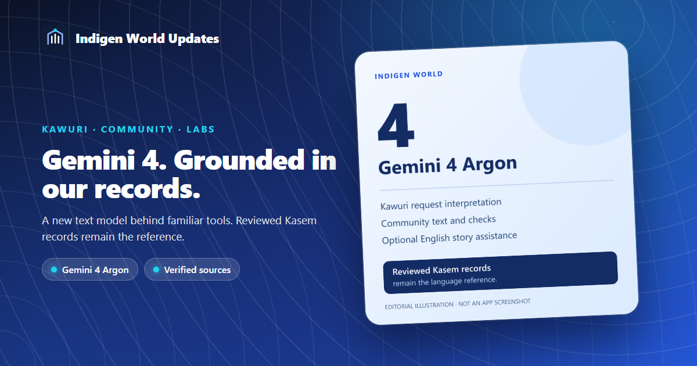
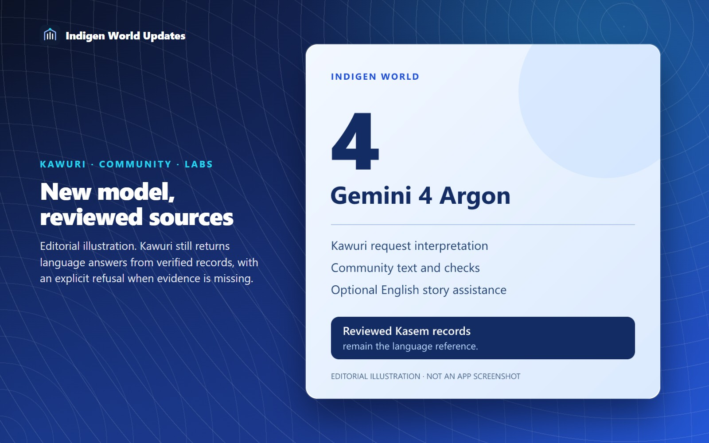

Indigen World now uses Gemini 4 Argon for its shared text tools. The upgrade covers Kawuri's interpretation of unfamiliar requests, community text generation and checks, and the optional English story assistant in Labs.

Kawuri can use the new model to interpret what someone wants to look up. Community automation uses it when preparing English text and checking it against the supplied evidence, including source-based Ghana headline summaries. Labs uses it for optional English story structure suggestions wherever that feature is already enabled.
This release changes the model behind those tools. We have checked compatibility and the existing answer rules; we have not established a measured improvement in response quality or speed.
For language questions, Gemini returns a small request plan. Kawuri's displayed answer still comes from published dictionary entries, reviewed expressions and trusted app guidance. A missing record still leads to an explicit refusal to guess a Kasem word or sentence.

Open Kawuri and ask about a word or an app feature as usual. Community accounts keep their existing schedules. Eligible Labs users can continue using English story assistance when it is enabled. These server changes do not require a new Android app installation.
Release status: deployed and verified on 15 October 2026. All eleven affected server functions are active. A production Kawuri lookup returned published dictionary records, and its runtime log confirmed an accepted Gemini 4 Argon request on the global endpoint. The 166 backend tests also passed.
Existing access checks, daily allowances, evidence requirements and provider availability still apply. Past posts and saved drafts are not regenerated simply because the model changed. Images, video, transcription and media analysis keep their separate models. The assessment worker and quality-based points awards are outside this upgrade.